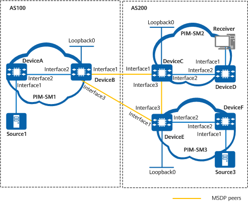

Example for Configuring MSDP Peers to Implement PIM-SM Inter-domain Multicast
Networking Requirements
Two ASs exist on the network shown in Figure 1. Each AS contains at least one PIM-SM domain, and each PIM-SM domain may contain one multicast source and receiver, or none at all. It is required that the receiver in domain PIM-SM2 be capable of receiving multicast data sent by both S3 in domain PIM-SM3 and S1 in domain PIM-SM1.

In this example, interface1, interface2, and interface3 represent 10GE0/0/1, 10GE0/0/2, and 10GE0/0/3, respectively.

Device |
Interface |
IP Address |
|---|---|---|
DeviceA |
10GE0/0/1 |
10.110.1.1/24 |
10GE0/0/2 |
192.168.1.1/24 |
|
DeviceB |
Loopback0 |
1.1.1.1/32 |
10GE0/0/1 |
192.168.2.1/24 |
|
10GE0/0/2 |
192.168.1.2/24 |
|
10GE0/0/3 |
192.168.6.1/24 |
|
DeviceC |
Loopback0 |
2.2.2.2/32 |
10GE0/0/1 |
192.168.2.2/24 |
|
10GE0/0/2 |
192.168.3.1/24 |
|
10GE0/0/3 |
192.168.4.1/24 |
|
DeviceD |
10GE0/0/1 |
10.110.2.1/24 |
10GE0/0/2 |
192.168.3.2/24 |
|
DeviceE |
Loopback0 |
3.3.3.3/32 |
10GE0/0/2 |
192.168.5.1/24 |
|
10GE0/0/3 |
192.168.4.2/24 |
|
10GE0/0/1 |
192.168.6.2/24 |
|
DeviceF |
10GE0/0/1 |
10.110.3.1/24 |
10GE0/0/2 |
192.168.5.2/24 |
Precautions
Note the following during the configuration:
Establish an MSDP peer relationship between BGP peers only when the unicast autonomous system boundary router (ASBR) functions as the RP.
The addresses of the interfaces on which an MSDP peer relationship is established must be the same as those of the interfaces on which an EBGP peer relationship is established.
Configuration Roadmap
The configuration roadmap is as follows:
Enable the multicast function and configure interface IP addresses on devices. Configure OSPF in each AS to ensure that unicast routes in the AS are reachable.
Configure EBGP peers between ASs and import BGP and OSPF routes into each other's routing table to ensure unicast route reachability between ASs.
Enable PIM-SM on each interface, configure BSR boundaries to form PIM-SM domains, and enable IGMP on interfaces connected to hosts.
Configure the Candidate-BootStrap Router (C-BSR) and the Candidate-Rendezvous Point (C-RP), and configure ASBRs as RPs in PIM-SM1 and PIM-SM2.
Establish MSDP peer relationships between RPs in PIM-SM domains.
Add all MSDP peers in both the same and different ASs to the same mesh group.
Procedure
- Enable the multicast function, assign an IP address to each interface, and configure OSPF as a unicast routing protocol for interworking in each AS.# Configure DeviceB.
<HUAWEI> system-view [HUAWEI] sysname DeviceB [DeviceB] multicast routing-enable [DeviceB] interface 10ge 0/0/1 [DeviceB-10GE0/0/1] ip address 192.168.2.1 24 [DeviceB-10GE0/0/1] quit [DeviceB] interface 10ge 0/0/2 [DeviceB-10GE0/0/2] ip address 192.168.1.2 24 [DeviceB-10GE0/0/2] quit [DeviceB] interface 10ge 0/0/3 [DeviceB-10GE0/0/3] ip address 192.168.6.1 24 [DeviceB-10GE0/0/3] quit [DeviceB] interface loopback 0 [DeviceB-LoopBack0] ip address 1.1.1.1 255.255.255.255 [DeviceB-LoopBack0] quit [DeviceB] ospf 1 [DeviceB-ospf-1] area 0.0.0.0 [DeviceB-ospf-1-area-0.0.0.0] network 192.168.1.0 0.0.0.255 [DeviceB-ospf-1-area-0.0.0.0] network 1.1.1.1 0.0.0.0 [DeviceB-ospf-1-area-0.0.0.0] quit [DeviceB-ospf-1] quit
The configurations of other devices are similar to the configuration of DeviceB. For detailed configurations, see Configuration Scripts.
- Establish EBGP peer relationships between ASs and configure BGP and OSPF to import routes from each other.
# Configure EBGP on DeviceB and import OSPF routes.
[DeviceB] bgp 100 [DeviceB] router-id 1.1.1.1 [DeviceB-bgp] peer 192.168.2.2 as-number 200 [DeviceB-bgp] peer 192.168.2.2 ebgp-max-hop 255 [DeviceB-bgp] peer 192.168.6.2 as-number 200 [DeviceB-bgp] peer 192.168.6.2 ebgp-max-hop 255 [DeviceB-bgp] import-route ospf 1 [DeviceB-bgp] quit
# Configure EBGP on DeviceC and import OSPF routes.
[DeviceC] bgp 200 [DeviceC-bgp] router-id 2.2.2.2 [DeviceC-bgp] peer 192.168.2.1 as-number 100 [DeviceC-bgp] peer 192.168.2.1 ebgp-max-hop 255 [DeviceC-bgp] import-route ospf 1 [DeviceC-bgp] quit
# Configure EBGP on DeviceE and import OSPF routes.
[DeviceE] bgp 200 [DeviceE-bgp] router-id 3.3.3.3 [DeviceE-bgp] peer 192.168.6.1 as-number 100 [DeviceE-bgp] peer 192.168.6.1 ebgp-max-hop 255 [DeviceE-bgp] import-route ospf 1 [DeviceE-bgp] quit
# Import BGP routes to OSPF on DeviceB. The configurations of DeviceC and DeviceE are similar to the configuration of DeviceB. For detailed configurations, see Configuration Scripts.
[DeviceB] ospf 1 [DeviceB-ospf-1] import-route bgp [DeviceB-ospf-1] quit
- Enable PIM-SM on interfaces and configure BSR boundaries.
# Enable PIM-SM on each involved interface of DeviceB. The configurations of other devices are similar to the configuration of DeviceB. For detailed configurations, see Configuration Scripts.
[DeviceB] interface 10ge 0/0/1 [DeviceB-10GE0/0/1] pim sm [DeviceB-10GE0/0/1] quit [DeviceB] interface 10ge 0/0/2 [DeviceB-10GE0/0/2] pim sm [DeviceB-10GE0/0/2] quit [DeviceB] interface 10ge 0/0/3 [DeviceB-10GE0/0/3]pim sm [DeviceB-10GE0/0/3] quit
# Configure a BSR boundary on DeviceB's 10GE0/0/3 and 10GE0/0/1, DeviceE's 10GE0/0/1 and 10GE0/0/3, and DeviceC's 10GE0/0/3 and 10GE0/0/1. The configurations on DeviceE and DeviceC are similar to the configuration of DeviceB. For detailed configurations, see Configuration Scripts.
[DeviceB] interface 10ge 0/0/3 [DeviceB-10GE0/0/3] pim bsr-boundary [DeviceB-10GE0/0/3] quit [DeviceB] interface 10ge 0/0/1 [DeviceB-10GE0/0/1] pim bsr-boundary [DeviceB-10GE0/0/1] quit
- Enable IGMP on the interface connecting to the host.
# Enable IGMP on the interface connecting DeviceD to the host.
[DeviceD] interface 10ge 0/0/1 [DeviceD-10GE0/0/1] igmp enable [DeviceD-10GE0/0/1] quit
- Configure C-BSRs and C-RPs.
# Configure a C-BSR and a C-RP on DeviceB. The configurations of DeviceC and DeviceE are similar to the configuration of DeviceB. For detailed configurations, see Configuration Scripts.
[DeviceB] interface loopback 0 [DeviceB-LoopBack0] pim sm [DeviceB-LoopBack0] quit [DeviceB] pim [DeviceB-pim] c-bsr loopback 0 [DeviceB-pim] c-rp loopback 0 [DeviceB-pim] quit
- Configure MSDP peer relationships.
# Configure an MSDP peer relationship on DeviceB.
[DeviceB] msdp [DeviceB-msdp] peer 192.168.2.2 connect-interface 10ge 0/0/1 [DeviceB-msdp] peer 192.168.6.2 connect-interface 10ge 0/0/1 [DeviceB-msdp] quit
# Configure an MSDP peer relationship on DeviceC.
[DeviceC] msdp [DeviceC-msdp] peer 192.168.2.1 connect-interface 10ge 0/0/1 [DeviceC-msdp] peer 192.168.4.2 connect-interface 10ge 0/0/3 [DeviceC-msdp] quit
# Configure an MSDP peer relationship on DeviceE.
[DeviceE] msdp [DeviceE-msdp] peer 192.168.4.1 connect-interface 10ge 0/0/3 [DeviceE-msdp] peer 192.168.6.1 connect-interface 10ge 0/0/3 [DeviceE-msdp] quit
- Add all MSDP peers in both the same and different ASs to the same mesh group.
# Add DeviceB to the mesh group group1.
[DeviceB] msdp [DeviceB-msdp] peer 192.168.2.2 mesh-group group1 [DeviceB-msdp] peer 192.168.6.2 mesh-group group1 [DeviceB-msdp] quit
# Add DeviceC to the mesh group group1.
[DeviceC] msdp [DeviceC-msdp] peer 192.168.2.1 mesh-group group1 [DeviceC-msdp] peer 192.168.4.2 mesh-group group1 [DeviceC-msdp] quit
# Add DeviceE to the mesh group group1.
[DeviceE] msdp [DeviceE-msdp] peer 192.168.4.1 mesh-group group1 [DeviceE-msdp] peer 192.168.6.1 mesh-group group1 [DeviceE-msdp] quit
Verifying the Configuration
# Run the display bgp peer command to check BGP peer relationships established between devices. The following example uses the command output on DeviceB and DeviceC.
[DeviceB] display bgp peer BGP local router ID : 1.1.1.1 Local AS number : 100 Total number of peers : 1 Peers in established state : 1 Peer V AS MsgRcvd MsgSent OutQ Up/Down State PrefRcv 192.168.2.2 4 200 52 49 0 00:42:37 Established 7 [DeviceC] display bgp peer BGP local router ID : 2.2.2.2 Local AS number : 200 Total number of peers : 1 Peers in established state : 1 Peer V AS MsgRcvd MsgSent OutQ Up/Down State PrefRcv 192.168.2.1 4 100 18 16 0 00:12:04 Established 1
# Run the display msdp brief command to check MSDP peer relationships established between devices. The brief information about MSDP peers on DeviceB and DeviceC and DeviceE is as follows:
[DeviceB] display msdp brief MSDP Peer Brief Information of VPN-Instance: public net Configured Up Listen Connect Shutdown Down 2 2 0 0 0 0 Peer's Address State Up/Down time AS SA Count Reset Count 192.168.2.2 Up 00:12:27 200 13 0 192.168.6.2 Up 01:13:08 200 13 0 [DeviceC] display msdp brief MSDP Peer Brief Information of VPN-Instance: public net Configured Up Listen Connect Shutdown Down 2 2 0 0 0 0 Peer's Address State Up/Down time AS SA Count Reset Count 192.168.2.1 Up 01:07:08 100 8 0 192.168.4.2 Up 00:06:39 200 13 0 [DeviceE] display msdp brief MSDP Peer Brief Information of VPN-Instance: public net Configured Up Listen Connect Shutdown Down 2 2 0 0 0 0 Peer's Address State Up/Down time AS SA Count Reset Count 192.168.4.1 Up 00:15:32 200 8 0 192.168.6.1 Up 01:18:40 100 8 0
# Run the display msdp peer-status command to check detailed information about MSDP peer relationships established between devices. The detailed information about MSDP peers on DeviceB is displayed as follows:
[DeviceB] display msdp peer-status
MSDP Peer Information of : public net
MSDP Peer 192.168.2.2, AS 200
Description:
Information about connection status:
State: Up
Up/down time: 00:15:47
Resets: 0
Connection interface: 10GE0/0/1 (192.168.2.1)
Number of sent/received messages: 16/16
Number of discarded output messages: 0
Elapsed time since last connection or counters clear: 00:17:51
Mesh group peer joined: group1
Information about (Source, Group)-based SA filtering policy:
Import policy: none
Export policy: none
Information about SA-Requests:
Policy to accept SA-Request messages: none
Sending SA-Requests status: disable
Minimum TTL to forward SA with encapsulated data: 0
SAs learned from this peer: 0, SA-cache maximum for the peer: none
Input queue size: 0, Output queue size: 0
Counters for MSDP message:
Count of RPF check failure: 0
Incoming/outgoing SA messages: 0/0
Incoming/outgoing SA requests: 0/0
Incoming/outgoing SA responses: 0/0
Incoming/outgoing data packets: 0/0
Peer authentication: unconfigured
Peer authentication: none
MSDP Peer 192.168.6.2, AS 200
Description:
Information about connection status:
State: Up
Up/down time: 01:10:49
Resets: 0
Connection interface: 10GE0/0/3 (192.168.6.1)
Number of sent/received messages: 71/71
Number of discarded output messages: 0
Elapsed time since last connection or counters clear: 01:11:50
Mesh group peer joined: group1
Information about (Source, Group)-based SA filtering policy:
Import policy: none
Export policy: none
Information about SA-Requests:
Policy to accept SA-Request messages: none
Sending SA-Requests status: disable
Minimum TTL to forward SA with encapsulated data: 0
SAs learned from this peer: 0, SA-cache maximum for the peer: none
Input queue size: 0, Output queue size: 0
Counters for MSDP message:
Count of RPF check failure: 0
Incoming/outgoing SA messages: 0/0
Incoming/outgoing SA requests: 0/0
Incoming/outgoing SA responses: 0/0
Incoming/outgoing data packets: 0/0
Peer authentication: unconfigured
Peer authentication type: none
# Run the display pim routing-table command to check the PIM routing table on each device. When S1 (10.110.1.2/24) in PIM-SM1 and S3 (10.110.3.2/24) in PIM-SM3 send multicast data to G (225.1.1.1/24), Receiver (10.110.2.2/24) in PIM-SM2 can receive the multicast data. Information about the PIM routing tables on DeviceB and DeviceC is as follows:
[DeviceB] display pim routing-table
VPN-Instance: public net
Total 0 (*, G) entry; 1 (S, G) entry
(10.110.1.2, 225.1.1.1)
RP: 1.1.1.1(local)
Protocol: pim-sm, Flag: SPT 2MSDP ACT
UpTime: 00:00:42
Upstream interface: 10GE0/0/2, Refresh time: 00:00:42
Upstream neighbor: 192.168.1.1
RPF neighbor: 192.168.1.1
Downstream interface(s) information:
Total number of downstreams: 1
1: 10GE0/0/1
Protocol: pim-sm, UpTime: 00:00:42, Expires:-
[DeviceC] display pim routing-table
VPN-Instance: public net
Total 1 (*, G) entry; 2 (S, G) entries
(*, 225.1.1.1)
RP: 2.2.2.2(local)
Protocol: pim-sm, Flag: WC
UpTime: 00:13:46
Upstream interface: NULL, Refresh time: 00:13:46
Upstream neighbor: NULL
RPF prime neighbor: NULL
Downstream interface(s) information:
Total number of downstreams: 1
1: 10GE0/0/2,
Protocol: pim-sm, UpTime: 00:13:46, Expires:-
(10.110.1.2, 225.1.1.1)
RP: 2.2.2.2
Protocol: pim-sm, Flag: SPT MSDP ACT
UpTime: 00:00:42
Upstream interface: 10GE0/0/1, Refresh time: 00:00:42
Upstream neighbor: 192.168.2.1
RPF neighbor: 192.168.2.1
Downstream interface(s) information:
Total number of downstreams: 1
1: 10GE0/0/2
Protocol: pim-sm, UpTime: 00:00:42, Expires:-
(10.110.3.2, 225.1.1.1)
RP: 2.2.2.2
Protocol: pim-sm, Flag: SPT MSDP ACT
UpTime: 00:00:42
Upstream interface: 10GE0/0/3, Refresh time: 00:00:42
Upstream neighbor: 192.168.4.2
RPF neighbor: 192.168.4.2
Downstream interface(s) information:
Total number of downstreams: 1
1: 10GE0/0/2
Protocol: pim-sm, UpTime: 00:00:42, Expires:-
Configuration Scripts
DeviceA
# sysname DeviceA # multicast routing-enable # interface 10GE0/0/2 ip address 192.168.1.1 255.255.255.0 pim sm # interface 10GE0/0/1 ip address 10.110.1.1 255.255.255.0 pim sm # ospf 1 area 0.0.0.0 network 10.110.1.0 0.0.0.255 network 192.168.1.0 0.0.0.255 # return
DeviceB
# sysname DeviceB # multicast routing-enable # interface 10GE0/0/1 ip address 192.168.2.1 255.255.255.0 pim bsr-boundary pim sm # interface 10GE0/0/2 ip address 192.168.1.2 255.255.255.0 pim sm # interface 10GE0/0/3 ip address 192.168.6.1 255.255.255.0 pim bsr-boundary pim sm # interface LoopBack0 ip address 1.1.1.1 255.255.255.255 pim sm # pim c-bsr LoopBack0 c-rp LoopBack0 # ospf 1 import-route bgp area 0.0.0.0 network 192.168.1.0 0.0.0.255 network 1.1.1.1 0.0.0.0 # bgp 100 router-id 1.1.1.1 peer 192.168.2.2 as-number 200 peer 192.168.6.2 as-number 200 peer 192.168.2.2 ebgp-max-hop 255 peer 192.168.6.2 ebgp-max-hop 255 # ipv4-family unicast import-route ospf 1 peer 192.168.2.2 enable peer 192.168.6.2 enable peer 192.168.2.2 route-update-interval 0 # msdp peer 192.168.2.2 connect-interface 10GE0/0/1 peer 192.168.2.2 mesh-group group1 peer 192.168.6.2 connect-interface 10GE0/0/1 peer 192.168.6.2 mesh-group group1 # return
DeviceC
# sysname DeviceC # multicast routing-enable # interface 10GE0/0/1 ip address 192.168.2.2 255.255.255.0 pim bsr-boundary pim sm # interface 10GE0/0/2 ip address 192.168.3.1 255.255.255.0 pim sm # interface 10GE0/0/3 ip address 192.168.4.1 255.255.255.0 pim bsr-boundary pim sm # interface LoopBack0 ip address 2.2.2.2 255.255.255.255 pim sm # pim c-bsr LoopBack0 c-rp LoopBack0 # ospf 1 import-route bgp area 0.0.0.0 network 192.168.3.0 0.0.0.255 network 192.168.4.0 0.0.0.255 network 2.2.2.2 0.0.0.0 # bgp 200 router-id 2.2.2.2 peer 192.168.2.1 as-number 100 peer 192.168.2.1 ebgp-max-hop 255 # ipv4-family unicast import-route ospf 1 peer 192.168.2.1 enable peer 192.168.2.1 route-update-interval 0 # msdp peer 192.168.2.1 connect-interface 10GE0/0/1 peer 192.168.2.1 mesh-group group1 peer 192.168.4.2 connect-interface 10GE0/0/3 peer 192.168.4.2 mesh-group group1 # return
- DeviceD
# sysname DeviceD # multicast routing-enable # interface 10GE0/0/1 ip address 10.110.2.1 255.255.255.0 pim sm igmp enable # interface 10GE0/0/2 ip address 192.168.3.2 255.255.255.0 pim sm # ospf 1 area 0.0.0.0 network 10.110.2.0 0.0.0.255 network 192.168.3.0 0.0.0.255 # return
- DeviceE
# sysname DeviceE # multicast routing-enable # interface 10GE0/0/2 ip address 192.168.5.1 255.255.255.0 pim sm # interface 10GE0/0/3 ip address 192.168.4.2 255.255.255.0 pim bsr-boundary pim sm # interface 10GE0/0/1 ip address 192.168.6.2 255.255.255.0 pim bsr-boundary pim sm # interface LoopBack0 ip address 3.3.3.3 255.255.255.255 pim sm # pim c-bsr LoopBack0 c-rp LoopBack0 # ospf 1 import-route bgp area 0.0.0.0 network 192.168.4.0 0.0.0.255 network 192.168.5.0 0.0.0.255 network 3.3.3.3 0.0.0.0 # bgp 200 router-id 3.3.3.3 peer 192.168.6.1 as-number 100 peer 192.168.6.1 ebgp-max-hop 255 # ipv4-family unicast import-route ospf 1 peer 192.168.6.1 enable # msdp peer 192.168.4.1 connect-interface 10GE0/0/3 peer 192.168.4.1 mesh-group group1 peer 192.168.6.1 connect-interface 10GE0/0/3 peer 192.168.6.1 mesh-group group1 # return
DeviceF
# sysname DeviceF # multicast routing-enable # interface 10GE0/0/1 ip address 10.110.3.1 255.255.255.0 pim sm # interface 10GE0/0/2 ip address 192.168.5.2 255.255.255.0 pim sm # ospf 1 area 0.0.0.0 network 10.110.3.0 0.0.0.255 network 192.168.5.0 0.0.0.255 # return